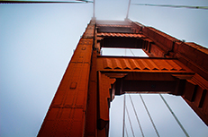
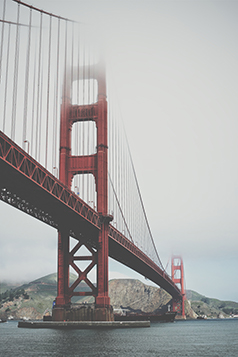

Le pont du Golden Gate
Le pont du Golden Gate (en anglais Golden Gate Bridge, littéralement le «pont de la porte d'or») est un pont suspendu américain situé dans l'État de Californie, traversant le Golden Gate, détroit par lequel la baie de San Francisco débouche dans l’océan Pacifique. Il permet ainsi de relier la ville de San Francisco, située à la pointe nord de la péninsule de San Francisco, à la ville de Sausalito, située à la pointe sud de la péninsule du comté de Marin. Financée par la Work Projects Administration, sa construction, qui se heurte à de nombreuses difficultés, débute en 1933 et s’étale sur une durée de quatre ans, pour s’achever en 1937.
Le pont du Golden Gate est jusqu’en 1964 le pont suspendu le plus long du monde et constitue aujourd’hui le monument le plus célèbre de San Francisco. Il est en outre aisément reconnaissable à sa couleur «orange international» et à l’architecture de ses deux pylônes. Selon un classement de l’American Society of Civil Engineers, l'ouvrage d'art fait partie des sept merveilles du monde moderne.
Caractéristiques
La couleur du pont “orange international” a été choisie pour être en accord avec les paysages environnants. Le pont peut se balancer de plus de deux mètres pour résister à des vents de 160 km/h, il compte six voies de circulation ouvertes au trafic automobile et deux allées réservées aux piétons de chaque côté du pont.
Le pont du Golden Gate est peint, depuis sa construction, en orange, et plus précisément en orange international. Le choix de cette couleur est dû à Irving Morrow, qui rencontra pourtant de vives critiques de la part des officiels, qui trouvaient l'idée ridicule. Les autres peintures proposées, à savoir le gris acier (proche de celui du Bay Bridge voisin), la couleur aluminium ne furent pas retenues, Morrow jugeant que l'orange s'accordait parfaitement avec les divers éléments de la baie. L'United States Navy avait même proposé de peindre le pont en jaune, avec des rayures noires pour faciliter la visibilité depuis des navires traversant la baie, mais Morrow ne renonça jamais à son idée première, et le pont fut peint en orange, ce qui constitue d'ailleurs l'un de ses traits les plus caractéristiques.
La pose et l'entretien de la peinture constituent le principal travail de maintenance du pont du Golden Gate. La peinture a en effet pour but de le protéger contre le sel contenu dans l'air, qui favorise le développement de la rouille, ce qui fragilise l'acier. La question de l'entretien de la peinture est sujette à diverses polémiques : pour certains, la peinture est remplacée tous les sept ans, alors que pour d'autres, le travail de rénovation de la peinture est permanent. En réalité, le pont a été peint à l'origine avec une épaisse couche de peinture à base de plomb, qui n'a pas été retouchée en profondeur pendant vingt-sept ans. Mais, en 1968, l'état de corrosion avancé de la structure a incité les autorités à lancer un programme visant à enlever l'ancienne peinture, et à la remplacer par un apprêt de silicate de zinc, recouvert de couches de vinyle. Dans les années 1990, la peinture vinyle fut à son tour remplacée par une peinture acrylique, afin d'être conforme aux normes de qualité de l'air. Le programme fut achevé en 1995 et, depuis, seules les zones les plus touchées par la corrosion sont retouchées. La couleur orange international du pont est obtenue par le mélange de 100 parties de jaune, 69 parties de magenta et 6 parties de noir. Les couleurs standardisées s'en rapprochant le plus sont PMS 173, PMS 174 ou Pantone 180.